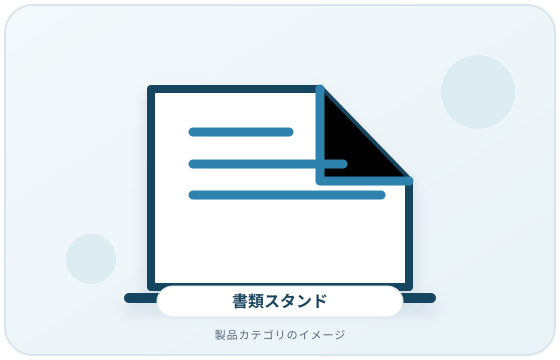
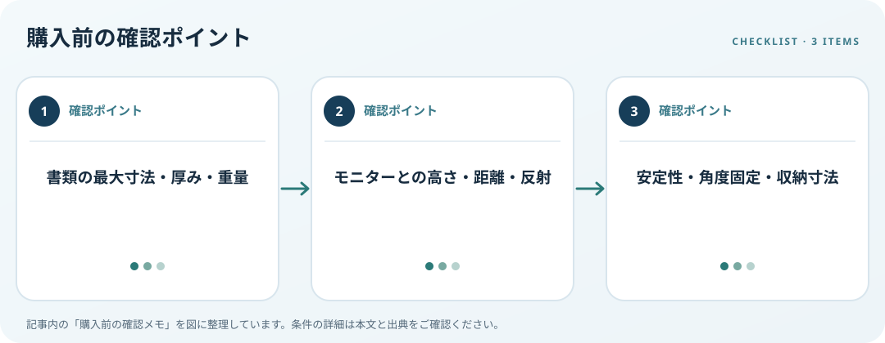

置く紙の寸法、モニターとの位置関係、保持方法と耐荷重を確認します。この記事では仕様の確認順を整理します。
画像・ボタンはAmazonアソシエイトリンクです。適格購入により紹介料を得る場合があります。

Amazon.co.jpで「書類スタンド デスク」を探す ↗

書類と作業方法を整理
A4用紙だけか、冊子や厚い資料も使うか、手書き入力をするかを決めます。対応する幅・高さ・厚み、押さえ具、ページをめくる操作を寸法図で確認します。折りたたみ式は使用時と収納時の大きさを両方見て、机に置けるか測ります。
画面との高さ・距離を見る
OSHAは書類をモニターとおおむね同じ高さ・距離に置く方法を紹介しています。頻繁に視線を移す作業なら、台を置く場所や照明の反射を机上で試します。書類スタンド単体の高さではなく、椅子、画面、キーボードと合わせて位置を考えましょう。
重さと安定性を確認
厚い本や束ねた書類を載せるなら、耐荷重、脚、角度固定、滑り止めをメーカー仕様で確認します。OSHAの案内でも、重い資料を載せても安定することをチェックします。荷重が明記されていない場合は、想定より重い物を載せないでください。
購入前の確認メモ
- 書類の最大寸法・厚み・重量
- モニターとの高さ・距離・反射
- 安定性・角度固定・収納寸法
この記事は出典の公開情報を購入前の確認項目に整理したもので、特定商品の使用・実測・レビュー・ランキング・価格・在庫の調査は行っていません。購入時には利用機器メーカーの最新仕様をご確認ください。
出典
- Document Holders — OSHA（確認日: 2026-10-10）
- Monitors — OSHA（確認日: 2026-10-10）